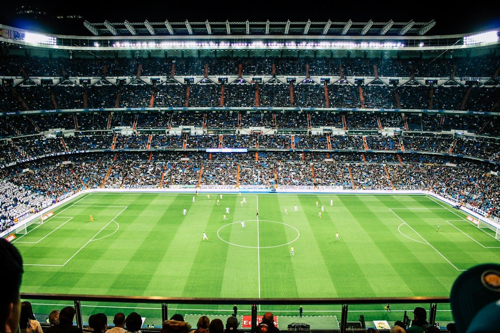
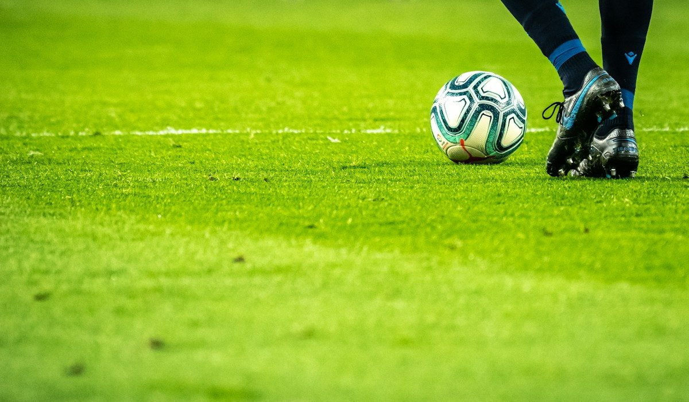
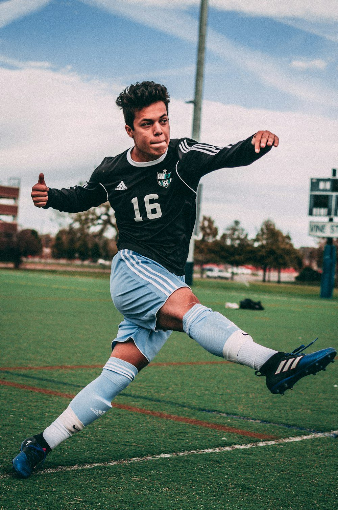

Древность
Цуцзюй
В Древнем Китае играли в цуцзюй — одну из ранних игр с мячом, которую часто упоминают среди предшественников футбола.
Легенды, трофеи, великие противостояния и культура футбола — всё, ради чего мы любим эту игру.
Ключевые вехи становления самой популярной игры на планете.
В Древнем Китае играли в цуцзюй — одну из ранних игр с мячом, которую часто упоминают среди предшественников футбола.
В Англии основана Футбольная ассоциация и началось отделение футбола от регби.
В Париже основана FIFA — международная организация, объединяющая национальные федерации.
Уругвай принимает первый мужской мундиаль и становится его победителем.
Стартует Кубок европейских чемпионов — предшественник Лиги чемпионов УЕФА.
В Китае проходит первый официальный чемпионат мира FIFA среди женщин.
Запускаются Лига чемпионов УЕФА и английская Премьер-лига; позже VAR меняет судейство, а цифровые платформы — боление.
Видеопомощники судей, данные о движении игроков и новые способы просмотра матчей меняют современный футбол.
Большие трибуны, точность движения и энергия каждого матча.



Фотографии: Unsplash. Источники и условия использования приведены в файле IMAGE_SOURCES.md.
Редакционная подборка по влиянию на игру, мастерству и достижениям. Номера указаны для основных профессиональных клубов и взрослых сборных; редкие юношеские и товарищеские номера могут отсутствовать.
Десять европейских клубов: титулы, матчи и голы в Кубке европейских чемпионов и Лиге чемпионов. Все показатели приведены за единый период — с 1955 года до конца сезона 2022/23, включая квалификацию и плей-офф.
| # | Клуб | Страна | КЕЧ / ЛЧ 🏆 | Матчи | Победы | Ничьи | Поражения | Голы | Пропущено | Разница | Источник |
|---|
Источник: UEFA Champions League Statistics Handbook 2022/23, All-time Records, стр. 1. Исторический срез по завершении сезона 2022/23, а не текущая статистика 2026 года. Порядок по титулам при равенстве редакционный; это не официальный рейтинг UEFA. Разница вычисляется как забитые минус пропущенные голы.
Футболки, шарфы и бутсы в клубных цветах. Демонстрационный каталог с условными ценами и локальной корзиной — не официальный магазин и не лицензированные товары.
Историческая подборка мужских сборных по результатам чемпионатов мира FIFA до 2022 года включительно. В таблице — титулы, вторые места, попадания в первую двойку и годы побед. Это не текущий рейтинг FIFA.
| # | Сборная | Титулы 🏆 | Вторые места | В первой двойке | Годы побед | Источник |
|---|
Источники: FIFA — чемпионы и призёры 1930–1978 и чемпионы и призёры с 1982 года (использованы результаты только до 2022 года). В 1950 году отдельного финала не было: первое место Уругвая и второе место Бразилии определились в финальной группе. Результаты ФРГ включены в показатели Германии. Данные сохранены на странице и не обновляются автоматически.